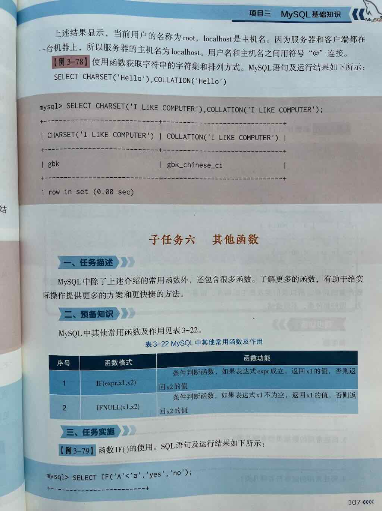
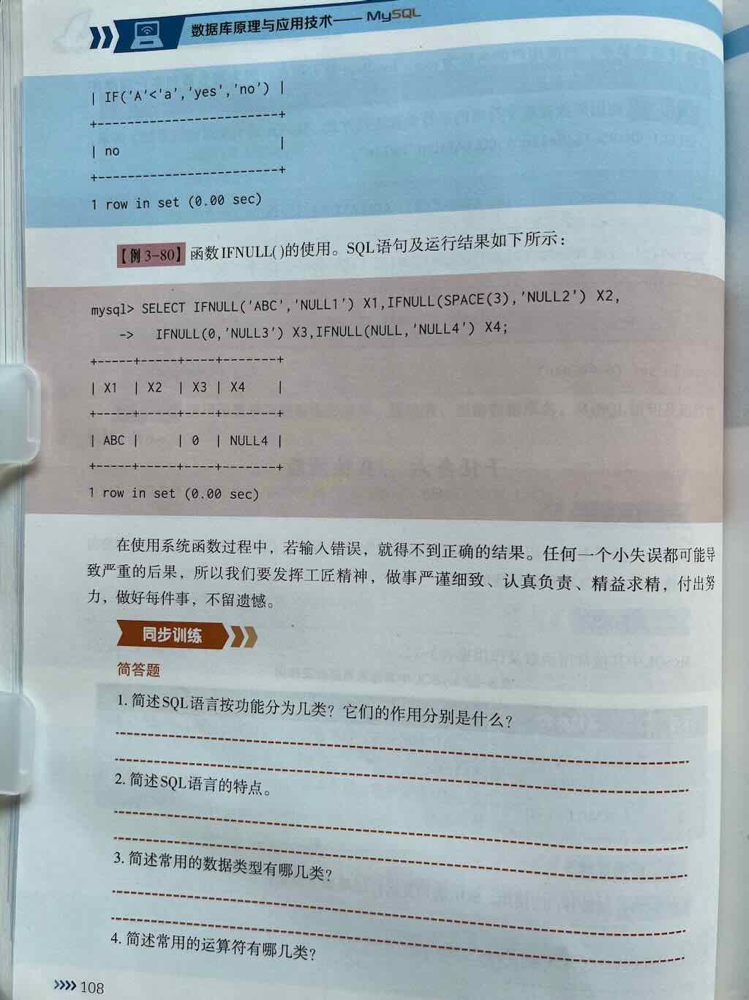
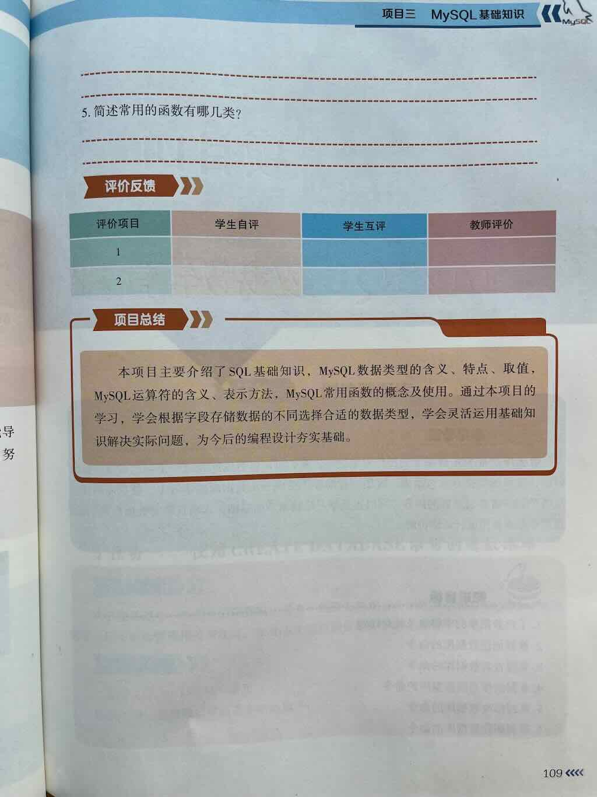

7 others



if函数
MySQL 中的 IF 函数是一个逻辑控制函数，用于根据条件判断返回不同的结果。它类似于编程语言中的三元运算符（条件 ? 结果1 : 结果2），语法简洁，适用于简单的条件分支逻辑。
语法
condition：需要判断的条件表达式（必须返回布尔值TRUE/FALSE）。value_if_true：当条件为真时返回的值。value_if_false：当条件为假时返回的值。
用法1:数值判断(双分支)
用法2.IF函数嵌套(多分支)
处理多重条件分支：
SELECT
name,
score,
IF(score >= 90, 'A',
IF(score >= 80, 'B',
IF(score >= 70, 'C',
IF(score >= 60, 'D', 'F')
)
)
) AS grade
FROM students;
输出结果：
+---------+-------+-------+
| name | score | grade |
+---------+-------+-------+
| Alice | 85 | B |
| Bob | 72 | C |
| Charlie | 60 | D |
| David | 45 | F |
+---------+-------+-------+
用法3:结合聚合函数
动态统计符合条件的数据：
SELECT
COUNT(*) AS total_students,
SUM(IF(score >= 60, 1, 0)) AS passed_count,
SUM(IF(score < 60, 1, 0)) AS failed_count
FROM students;
输出结果：
+----------------+--------------+--------------+
| total_students | passed_count | failed_count |
+----------------+--------------+--------------+
| 4 | 3 | 1 |
+----------------+--------------+--------------+
注意事项
- 返回值类型兼容性
IF函数返回的value_if_true和value_if_false需为同一数据类型，否则 MySQL 会隐式转换类型：
- 处理 NULL 值
如果条件中涉及NULL，需用IS NULL或IS NOT NULL判断：
SELECT IF(NULL, 'True', 'False'); -- 输出: 'False'（NULL 视为假）
SELECT IF(column IS NULL, 'Unknown', column) FROM table;
- 替代方案：CASE 语句
对于复杂多条件分支，推荐使用CASE语句（更易读）：
SELECT
name,
CASE
WHEN score >= 90 THEN 'A'
WHEN score >= 80 THEN 'B'
WHEN score >= 70 THEN 'C'
ELSE 'F'
END AS grade
FROM students;
典型应用场景
- 动态列生成
根据条件生成标记列（如是否达标、状态分类）。 - 数据清洗
替换无效值或格式化字段。 - 聚合统计
按条件分组计数或求和。 - 查询结果优化
简化复杂逻辑的查询结果展示。
总结
IF 函数是 MySQL 中处理简单条件分支的高效工具，适合快速实现二元逻辑。但在多层嵌套或复杂条件时，建议改用 CASE 语句以提高代码可读性。
练习1：判断是否及格
假设有一张 students 表：
插入示例数据：
示例：标记成绩是否及格
输出结果：
+---------+-------+--------+
| name | score | result |
+---------+-------+--------+
| Alice | 85 | Pass |
| Bob | 72 | Pass |
| Charlie | 60 | Pass |
| David | 45 | Fail |
+---------+-------+--------+
ifnull()函数
外键
以下是 5 道 MySQL 外键操作的综合练习题，涵盖外键的创建、删除和增删改查操作：
题目 1：基础外键创建
场景
创建两张表 departments 和 employees，满足以下要求：
departments表字段：dept_id(主键)、dept_nameemployees表字段：emp_id(主键)、emp_name,dept_id（外键关联 departments 表的 dept_id）- 当部门被删除时，自动将员工表中对应部门的
dept_id设为NULL。
参考答案
-- 创建 departments 表
CREATE TABLE departments (
dept_id INT PRIMARY KEY,
dept_name VARCHAR(50)
ENGINE=InnoDB;
-- 创建 employees 表（带外键）
CREATE TABLE employees (
emp_id INT PRIMARY KEY,
emp_name VARCHAR(50),
dept_id INT,
FOREIGN KEY (dept_id)
REFERENCES departments(dept_id)
ON DELETE SET NULL
) ENGINE=InnoDB;
题目 2：级联删除操作
场景
在 orders 和 order_items 表中：
- 删除订单时，自动删除关联的所有订单项
- 更新订单号时，自动同步更新订单项中的订单号
- 写出创建表的 SQL 语句。
参考答案
CREATE TABLE orders (
order_id INT PRIMARY KEY,
customer_name VARCHAR(50)
) ENGINE=InnoDB;
CREATE TABLE order_items (
item_id INT PRIMARY KEY,
order_id INT,
product_name VARCHAR(50),
FOREIGN KEY (order_id)
REFERENCES orders(order_id)
ON DELETE CASCADE
ON UPDATE CASCADE
) ENGINE=InnoDB;
题目 3：外键冲突处理
场景
向 employees 表插入以下数据，观察结果并解释原因：
INSERT INTO departments (dept_id, dept_name) VALUES (1, 'IT');
-- 尝试插入员工数据：
INSERT INTO employees (emp_id, emp_name, dept_id)
VALUES (101, 'Alice', 2); -- dept_id=2 不存在于 departments 表
参考答案
插入失败，报错 ERROR 1452 (23000): Cannot add or update a child row: a foreign key constraint fails。
原因：外键约束要求 employees.dept_id 必须存在于 departments.dept_id 中。
题目 4：联表查询与删除
场景
查询 IT 部门的所有员工，并删除 IT 部门（观察员工表的变化）。
参考答案
-- 联表查询
SELECT e.emp_id, e.emp_name
FROM employees e
JOIN departments d ON e.dept_id = d.dept_id
WHERE d.dept_name = 'IT';
-- 删除部门（级联设为 SET NULL 时的行为）
DELETE FROM departments WHERE dept_name = 'IT';
-- 验证员工表
SELECT * FROM employees; -- IT 部门员工的 dept_id 变为 NULL
题目 5：修改外键约束
场景
将 employees 表的外键约束从 ON DELETE SET NULL 改为 ON DELETE RESTRICT，并验证效果。
参考答案
-- 1. 删除原有外键
ALTER TABLE employees
DROP FOREIGN KEY employees_ibfk_1; -- 外键名称通过 SHOW CREATE TABLE 查询
-- 2. 添加新约束
ALTER TABLE employees
ADD FOREIGN KEY (dept_id)
REFERENCES departments(dept_id)
ON DELETE RESTRICT;
-- 3. 验证约束
-- 尝试删除有员工的部门
DELETE FROM departments WHERE dept_id = 1; -- 报错：无法删除被引用的父表记录
总结
通过以上练习可掌握：
- 外键的创建与级联行为配置
- 外键约束对增删改操作的影响
- 联表查询与约束冲突处理
- 动态修改外键约束的方法
MySQL 中的 IF 函数是一个逻辑控制函数，用于根据条件判断返回不同的结果。它类似于编程语言中的三元运算符（条件 ? 结果1 : 结果2），语法简洁，适用于简单的条件分支逻辑。
基本语法
-condition：需要判断的条件表达式（必须返回布尔值 TRUE/FALSE）。
- value_if_true：当条件为真时返回的值。
- value_if_false：当条件为假时返回的值。
核心用法示例
1. 简单数值判断
2. 字段值的条件处理
假设有一张 students 表：
示例：标记成绩是否及格
输出结果：+---------+-------+--------+
| name | score | result |
+---------+-------+--------+
| Alice | 85 | Pass |
| Bob | 72 | Pass |
| Charlie | 60 | Pass |
| David | 45 | Fail |
+---------+-------+--------+
进阶用法
1. 嵌套 IF 函数
处理多重条件分支：
SELECT
name,
score,
IF(score >= 90, 'A',
IF(score >= 80, 'B',
IF(score >= 70, 'C',
IF(score >= 60, 'D', 'F')
)
)
) AS grade
FROM students;
+---------+-------+-------+
| name | score | grade |
+---------+-------+-------+
| Alice | 85 | B |
| Bob | 72 | C |
| Charlie | 60 | D |
| David | 45 | F |
+---------+-------+-------+
2. 结合聚合函数
动态统计符合条件的数据：
SELECT
COUNT(*) AS total_students,
SUM(IF(score >= 60, 1, 0)) AS passed_count,
SUM(IF(score < 60, 1, 0)) AS failed_count
FROM students;
+----------------+--------------+--------------+
| total_students | passed_count | failed_count |
+----------------+--------------+--------------+
| 4 | 3 | 1 |
+----------------+--------------+--------------+
注意事项
-
返回值类型兼容性
IF函数返回的value_if_true和value_if_false需为同一数据类型，否则 MySQL 会隐式转换类型： -
处理 NULL 值
如果条件中涉及NULL，需用IS NULL或IS NOT NULL判断： -
替代方案：CASE 语句
对于复杂多条件分支，推荐使用CASE语句（更易读）：
典型应用场景
- 动态列生成
根据条件生成标记列（如是否达标、状态分类）。 - 数据清洗
替换无效值或格式化字段。 - 聚合统计
按条件分组计数或求和。 - 查询结果优化
简化复杂逻辑的查询结果展示。
总结
IF 函数是 MySQL 中处理简单条件分支的高效工具，适合快速实现二元逻辑。但在多层嵌套或复杂条件时，建议改用 CASE 语句以提高代码可读性。
MySQL 中 FIELD() 函数详解
FIELD() 是 MySQL 中用于 返回指定值在值列表中的位置 的函数，常用于自定义排序或条件判断。以下是其详细说明及用法示例。
一、语法与参数
- 参数说明： -value：要查找的值。
- val1, val2, ...：值列表（至少1个，最多255个参数）。
- 返回值：
- value 在列表中的首次出现位置（从 1 开始计数）。
- 如果未找到，返回 0。
- 如果 value 为 NULL，且列表中存在 NULL，则返回对应位置。
二、核心功能与示例
1. 基础用法
| 场景 | 示例 | 输出结果 | 说明 |
|---|---|---|---|
| 查找值在列表中的位置 | FIELD('b', 'a', 'b', 'c') |
2 |
返回第一个匹配项的位置 |
| 值不在列表中 | FIELD('x', 'a', 'b', 'c') |
0 |
未找到返回 0 |
| 处理重复值 | FIELD('b', 'a', 'b', 'c', 'b') |
2 |
仅返回首次出现的位置 |
| 空值处理 | FIELD(NULL, 'a', NULL, 'b') |
2 |
NULL 匹配列表中的 NULL |
2. 数据类型处理
- 隐式转换：若
value与列表值类型不同，MySQL 会尝试隐式转换。
三、实际应用场景
场景 1：自定义排序
-- 按优先级排序：'紧急' > '高' > '中' > '低'
SELECT task_name, priority
FROM tasks
ORDER BY FIELD(priority, '紧急', '高', '中', '低');
+------------+----------+
| task_name | priority |
+------------+----------+
| 修复漏洞 | 紧急 |
| 系统优化 | 高 |
| 文档编写 | 中 |
| 会议安排 | 低 |
+------------+----------+
场景 2：条件标记
-- 标记用户等级：VIP > 高级 > 普通
SELECT
user_id,
CASE FIELD(user_level, 'VIP', '高级', '普通')
WHEN 1 THEN '顶级客户'
WHEN 2 THEN '重点客户'
ELSE '一般客户'
END AS level_label
FROM users;
场景 3：动态过滤
四、注意事项
- 性能问题：
- 索引失效：在
WHERE或ORDER BY中使用FIELD()可能导致全表扫描。 -
优化方案：
- 预存优先级数值到表中，直接按数值排序。
- 使用
CASE WHEN替代FIELD()：
-
NULL 值处理：
-
FIELD(NULL, 'a', NULL)返回2，但需注意NULL比较的特殊性： -
参数限制：
- 最多支持 255 个参数（含
value）。
五、与相似函数的对比
| 函数 | 语法 | 特点 | 适用场景 |
|---|---|---|---|
FIELD() |
FIELD(value, val1, val2,...) |
返回值的自定义位置索引 | 自定义排序、条件标记 |
FIND_IN_SET() |
FIND_IN_SET(str, strlist) |
在逗号分隔的字符串中查找位置 | 处理逗号分隔的列表数据 |
INSTR() |
INSTR(str, substr) |
查找子字符串的位置 | 字符串内容搜索 |
六、总结
- 核心作用：根据自定义顺序映射值的位置，简化复杂排序逻辑。
- 适用场景：
- 按业务规则排序（如状态优先级）。
- 动态标记数据类别。
- 快速过滤特定值列表中的数据。
- 避坑指南：
- 避免在大型数据集直接使用
FIELD()排序。 - 注意隐式类型转换可能导致的匹配错误。
- 明确
NULL值的处理逻辑。
MySQL中的FORMAT()函数主要用于格式化数字，使其更易读（如添加千位分隔符、控制小数位数）。以下是详细解析：
一、语法与参数
• number：必需，要格式化的数字（整数或浮点数）。
• decimal_places：必需，指定保留的小数位数（若为0则省略小数部分，自动四舍五入）。
• locale：可选，指定千位分隔符和小数点的符号（如'de_DE'用.作千位分隔符，默认为'en_US'）。
二、核心功能
- 千位分隔符
自动添加逗号（如1234567→1,234,567）。 - 小数位控制
指定保留位数并四舍五入（如1234.567保留2位 →1,234.57）。 - 负数处理
保留负号（如-1234.567→-1,234.57）。
三、示例代码 1. 基本格式化
- 指定语言环境
- 财务数据应用
四、注意事项
1. 返回类型
结果为字符串，需转换回数值才能进一步计算。
2. 性能影响
大数据量时建议在应用层格式化，避免查询性能下降。
3. 精度问题
极大/极小数字可能因DOUBLE类型限制导致科学计数法显示。
五、对比其他函数
| 函数 | 用途 | 示例 |
|---|---|---|
FORMAT() |
数字格式化（带分隔符） | 1,234.56 |
ROUND() |
单纯四舍五入 | 1234.57（无分隔符） |
TRUNCATE() |
截断小数（不四舍五入） | 1234.56 → 1234.56 |
六、常见问题 • Q：如何去除千位分隔符？
A：结合REPLACE()函数：
FORMAT()？
A：建议用DATE_FORMAT()，语法不同（如%Y-%m-%d）。
通过合理使用FORMAT()，可显著提升数据可读性，尤其在财务报表或用户界面中。
MySQL中VERSION()函数详解
VERSION()函数用于获取当前MySQL服务器的版本信息，常用于数据库管理、版本兼容性检查及动态SQL脚本编写。
一、基本语法与返回值
语法
- 参数：无需参数。 - 返回值：字符串格式的MySQL服务器版本号（如8.0.33 或 5.7.42-log）。
示例
输出结果：二、版本号格式解析
MySQL版本号通常包含以下部分：
- 主版本号：重大功能更新（如8）。
- 次版本号：新增功能或改进（如 0）。
- 修订号：Bug修复或小优化（如 33）。
- 后缀：特殊标识（如 -log、-community）。
常见后缀说明
| 后缀 | 含义 |
|---|---|
-log |
启用日志功能的构建版本 |
-community |
社区版（免费） |
-enterprise |
企业版（需付费） |
-debug |
调试版本（含调试信息） |
三、核心使用场景
1. 检查数据库版本兼容性
在迁移或执行版本相关操作前验证MySQL版本：
-- 检查是否为MySQL 8.0及以上版本
SELECT
IF(SUBSTRING_INDEX(VERSION(), '.', 1) >= 8,
'支持窗口函数',
'需升级到MySQL 8.0+'
) AS compatibility_check;
2. 动态调整SQL语句
根据版本执行不同的逻辑（如语法兼容）：
-- 在存储过程中处理JSON函数兼容性
CREATE PROCEDURE dynamic_query()
BEGIN
SET @version = SUBSTRING_INDEX(VERSION(), '.', 1);
IF @version >= 8 THEN
SELECT JSON_EXTRACT('{"key": "value"}', '$.key');
ELSE
SELECT 'JSON函数需MySQL 5.7+';
END IF;
END;
3. 日志与监控
记录当前数据库版本到审计表：
四、版本信息提取技巧
1. 提取主版本号
2. 提取次版本号
SELECT SUBSTRING_INDEX(SUBSTRING_INDEX(VERSION(), '.', 2), '.', -1) AS minor_version;
-- 示例输入：8.0.33 → 输出：0
3. 提取修订号
4. 判断是否为特定版本
SELECT
CASE
WHEN VERSION() LIKE '8.%' THEN 'MySQL 8.x'
WHEN VERSION() LIKE '5.7%' THEN 'MySQL 5.7'
ELSE '其他版本'
END AS version_group;
五、注意事项
-
权限要求
所有用户均可执行SELECT VERSION();，无需特殊权限。 -
返回值差异
不同发行版（如MariaDB）可能返回格式不同的版本号。例如： -
性能影响
VERSION()函数执行效率极高，几乎不消耗资源。 -
客户端版本无关
该函数仅返回服务器版本，客户端版本需通过命令行查看：
六、与其他系统函数对比
| 函数 | 用途 | 示例返回值 |
|---|---|---|
VERSION() |
MySQL服务器版本 | 8.0.33 |
@@VERSION |
同VERSION() |
8.0.33 |
@@GLOBAL.VERSION |
全局系统变量版本（部分环境适用） | 依赖配置 |
DATABASE() |
当前数据库名称 | mydb |
USER() |
当前连接用户 | root@localhost |
七、实际案例
场景：按版本选择加密函数
-- 根据MySQL版本使用不同的密码加密方式
SET @version = SUBSTRING_INDEX(VERSION(), '.', 1);
SET @password = 'mysecret';
PREPARE stmt FROM
IF(@version >= 8,
'SELECT SHA2(?, 256) AS hash',
'SELECT SHA1(?) AS hash'
);
EXECUTE stmt USING @password;
DEALLOCATE PREPARE stmt;
总结
VERSION()函数是MySQL版本管理的核心工具，适用于动态SQL、兼容性检查及系统监控。结合字符串处理函数（如SUBSTRING_INDEX()），可灵活提取版本细节，优化跨版本数据库操作。